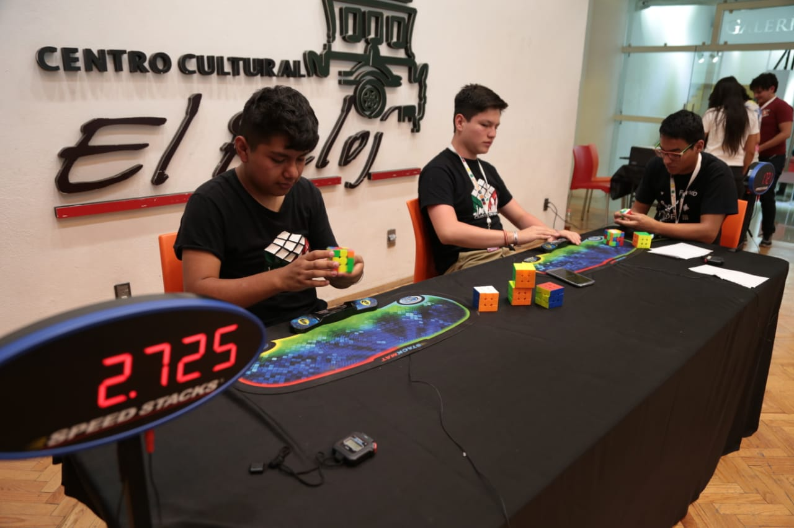

Un torneo de cubos de Rubik es un evento
competitivo en el que participantes de diferentes edades y niveles de
habilidad se reúnen para resolver el cubo de Rubik en el menor tiempo
posible. El objetivo principal es completar el cubo, devolviendo cada
color a su posición original, en el menor número de movimientos o tiempo
posible, dependiendo de las reglas específicas del torneo.
Los torneos de cubos de Rubik generalmente se llevan a cabo en un lugar
designado, como una sala de eventos o una convención. Los participantes se
registran previamente para competir en diferentes categorías, que pueden
incluir velocidad, resolución con una sola mano, resolución a ciegas y
otras variaciones. Durante el torneo, los participantes se enfrentan a
desafíos específicos, como resolver el cubo en un tiempo límite o en una
sola mano. Se utilizan cronómetros para medir el tiempo exacto que cada
participante tarda en completar su resolución.

Los torneos de cubos de Rubik suelen incluir múltiples rondas, donde los
competidores realizan varias resoluciones y se eliminan aquellos con los
peores tiempos o resultados. A medida que avanza el torneo, los mejores
competidores pasan a las etapas finales hasta que se determina a los
ganadores en cada categoría. Además de la competencia individual, los
torneos de cubos de Rubik también pueden incluir desafíos de equipos,
donde los participantes trabajan juntos para resolver el cubo en el menor
tiempo posible. Estos torneos ofrecen una oportunidad para que los cuberos
demuestren sus habilidades, compartan técnicas y estrategias, y formen
parte de una comunidad de entusiastas del cubo de Rubik. La emoción, la
camaradería y la pasión por el cubo de Rubik hacen que los torneos sean
eventos emocionantes y divertidos tanto para los competidores como para
los espectadores.